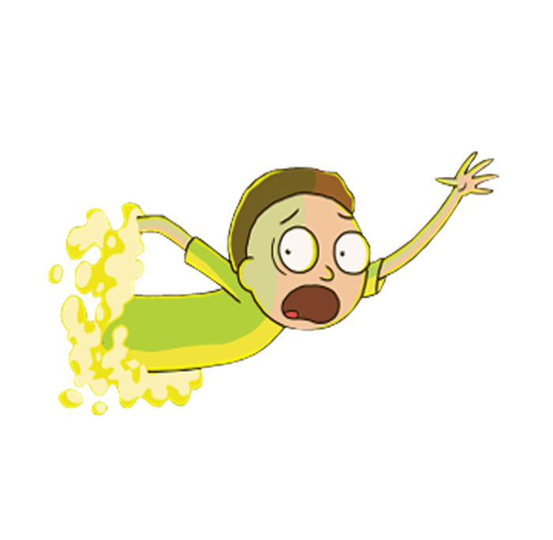
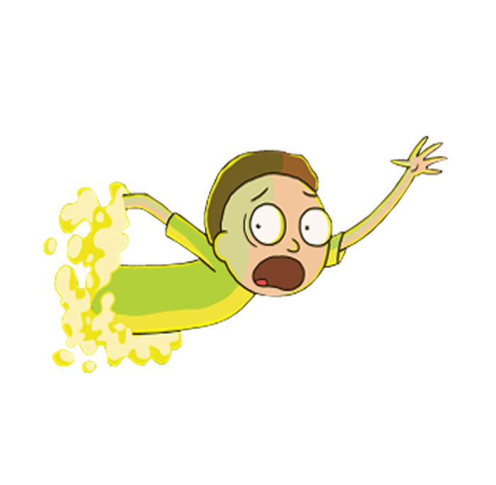

Rick and Morty is an American adult animated television series created by Justin Roiland and Dan Harmon in 2013 for Adult Swim, also aired on Cartoon Network. The series follows the misadventures of a scientist, Rick Sanchez, and his easily influenced grandson, Morty, who spend their time between domestic life and space, time, and intergalactic travel. Dan Harmon, the co-creator of the series, and Justin Roiland are in charge of the main voices of Morty and Rick, the series also includes the voices of Chris Parnell, Spencer Grammer, and Sarah Chalke.
The series originated from a rudimentary short film animated by Roiland for the Channel 101 film festival called Doc and Mharti, a parody of the main characters of Back to the Future. When NBC fired Harmon in 2013 due to disagreements between him and the executives of the series he had created, Community, he and Roiland developed a series based on the characters already created by Roiland.
The sixth season premiered on September 4, 2022, and consists of ten episodes. A seventh season was confirmed as part of a long-term deal with Cartoon Network that ordered 70 new episodes, renewing the series up to a tenth season. Adult Swim cut ties with Justin Roiland in 2023 amid allegations of gender violence and announced that it would re-cast his roles.